Next: Localized orbitals
Up: Mulliken populations
Previous: Mulliken populations
The NDDO methods (MNDO, AM1, etc) all use Slater orbitals,
but an implication of one of the approximations made, that
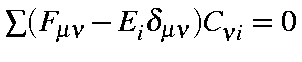,
is that the conventional molecular orbitals are normalized
to unity:
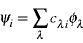
with
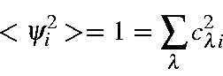 = 1 = \sum_{\lambda}c_{\lambda i}^2
\end{displaymath}">
For example, for H2, the occupied M.O. is:
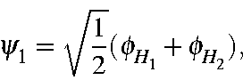
and the unoccupied M.O. is:
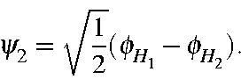
The diagonal of the density matrix is then constructed using the Coulson
formula:
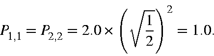
The off-diagonal terms are constructed in the same way:
If, instead of using S(Fmn
- Eidmn)Cni
= 0,
S(Fmn - Ei)Cni
= 0
,
is used, then the occupied and unoccupied
M.O.s become:
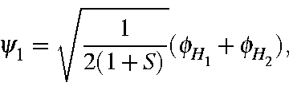
and the unoccupied M.O. is:
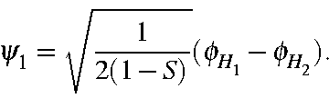
where S is the overlap integral:
<fH1|fH1>
In this case, the Coulson population would give
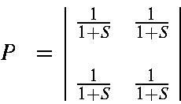
From this we see that the Coulson representation is unsuitable for two
reasons: first, the number of electrons in the system, represented by the
diagonal terms, does not add to 2.0. Second, the off-diagonal terms, which
should represent the number of electrons resulting from the overlap of the two
atomic orbitals, becomes unity as the overlap decreases.
To correct for this, it is physically meaningful to multiply the matrix
elements by the overlap. This gives:
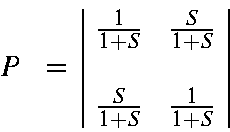
Now the off-diagonal terms accurately represent the number of electrons which are
associated with the overlap electron density. The total number of electrons
in the system is now correct:
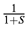
on atom 1,
 on atom 2, and
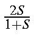
in the overlap region, giving a total of 2.0.
on atom 2, and
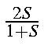
in the overlap region, giving a total of 2.0.
Although this representation is correct, it is potentially misleading, in that
the diagonal terms do not add to the number of electrons. Mulliken reasoned
that the electron density resulting from the overlaps should be divided into
two equal parts and added to the diagonal terms. When that is done, we get:
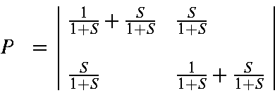
or
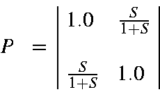
This simple example can be extended to systems involving heteroatoms and to
polyatomics, and is fully general.
The Mulliken analysis can be applied to semiempirical methods. To do this, it
is necessary to first convert the M.O.s from solutions
of S(Fmn
- Eidmn)Cni
= 0
to solutions of
S(Fmn - Ei)Cni
= 0.
The simplest way to do this is to take the conventional M.O.s
and multiply them by
S1/2.
In the case of H2, the resulting
M.O.s are exactly correct; in general, a small error is introduced. This error
arises from the incomplete annihilation of the secular matrix elements, and is
quite unimportant.
Next: Localized orbitals
Up: Mulliken populations
Previous: Mulliken populations
J. J. P. Stewart
Fujitsu Ltd. 2001